International Journal on Computer Vision, Machine Learning, and Data Mining (CVMLDM)

Volume 1 - Year 2015 - Pages 11-19
DOI: TBD
Identification of Butterfly Species by Similarity Indexes Based on Prototypes
Ertuğrul Ömer Faruk1*, Kaya Yılmaz2, Kayci Lokman3, Tekin Ramazan4
1Department Electrical and Electronic Engineering, Batman University, 72060 Batman, Turkey
omerfarukertugrul@gmail.com
2Department of Computer Engineering, Siirt University, 56100 Siirt, Turkey
3Department of Biology, Siirt University, 56100 Siirt, Turkey
4Department of Computer Engineering, Batman University, 72060 Batman, Turkey
Abstract - Butterflies can be classified by their outer morphological qualities, genital characters that can be obtained using various chemical substances and methods, which are carried out manually by preparing genital slides through some certain processes or molecular techniques. The aim of this study is to evaluate a computer vision and machine learning system that correctly identify butterfly species easier, faster and cheaper than traditional methods. In this study, human vision based image similarity methods were used as feature extractors, which were structural similarity measure (SSIM) method that depends on the combination of luminance, contrast and structural comparisons, and feature similarity index (FSIM) method that depends on combination of phase congruency and image gradient magnitude. First of all a prototype was determined for each species of 19 species, then for each butterfly, the SSIM and FSIM indexes were computed. The machine learning methods had achieved high accuracy rates for identification of butterfly species by these indexes, while it achieved 100% accuracy logistic linear classifier method The accuracy results of using SSIM and FSIM as a feature extraction method were compared with other similarity methods such as peak-signal-to-noise ratio, scale invariant feature transform, histogram comparison, image spatiogram comparison and texture methods.
Keywords: Butterfly identification; similarity; prototype; machine learning methods; SSIM; FSIM; image processing.
© Copyright 2015 Authors - This is an Open Access article published under the Creative Commons Attribution License terms. Unrestricted use, distribution, and reproduction in any medium are permitted, provided the original work is properly cited.
Date Received: 2014-07-12
Date Accepted: 2015-01-08
Date Published: 2015-01-15
1. Introduction
The Lepidoptera that involves butterflies and moths is one of the richest teams among insects with its more than 170.000 species [1]. Traditionally, butterflies have distinguished into species by their physical properties such as shapes of wings, textures, color, the figures on wings, taxonomic characters of species or especially the examination of genitals organs’ outer structural features of male [1] and also molecular studies can be used for identification [2]. Despite their safety and efficacy, traditional methods suffer from several major drawbacks: they are difficult, time-consuming and may be too expensive [3-6]. Additionally, all these studies used for butterfly identifications do not always give accurate results. Kaya et al. presented that the butterflies can also be classified by using image processing and machine learning method as an alternative to conventional diagnostic methods. In their studies, they employed Gabor filters (GF), grey-level co-occurrence matrix (GLCM) and local binary pattern (LBP) with various machine learning methods [3-6] such as multinomial logistic regression (MLR), artificial neural network (ANN) and extreme learning machine (ELM). However, texture methods have a number of limitations; they are slow and it is difficult to determine the optimum parameters for these methods, such as the angle and distance in GLCM.
In this study, a prototype, human learning based method [7, 8], were used. The human learns by simplifying the complex environment and various stimuli with: (a) categorization by grouping the objects or stimuli that have some common physical or functional traits, (b) defining an ideal exemplar as a prototype that sums up the characteristics of members of the category or, (c) rules to better control or understands, (d) defining an ideal exemplar as a prototype that sums up the characteristics of members of the category [9, 10]. Osherson and Smith reported that the prototypes are stored in human memory, to form category definitions [11, 12]. As a summary, using prototypes in place of the whole dataset reduces the storage and computational cost requirements [13].
Once, optimum prototypes for each species determined the similarity measures that are simpler therefore faster than image texture methods, were used to score the similarity indexes of query with each prototype. The structural similarity measure (SSIM) [14-19], feature similarity index (FSIM) [20], peak-signal-to-noise ratio (PSNR) [19], scale invariant feature transform (SIFT) [21], histogram comparison (HISTC) [22] and image spatiogram comparison (SPATC) [23] methods were used as a similarity measure. In this study, employing the SSIM and FSIM similarity measures was assessed in detailed and the others were used for comparison.
SSIM, which is also called single scale structural similarity, is a combination of luminance, contrast and structural comparisons of the images. It was reported that, SSIM can be used for determining the similarity index between two images that same resolution, perceptual capacity of the visual system, sampling density of the image, distance of the image plane to the observer and also it is insensitive to scaling, rotating and translation of each image [14, 15, 17 and 18]. Therefore, to overcome these drawbacks multi-scale SSIM was proposed. It was presented that, it is not sensitive to resolution, perceptual capacity of the visual system, sampling density of the image and distance from image plane to the observer of an image [14, 17]. Additionally, the complex wavelet structural similarity (CW-SSIM) was proposed to calculate the similarity index of images that have different geometric distortions and lighting conditions by analyzing images at complex wavelet domain [18]. SSIM was generally used for image quality calculations [14, 15, 17 and 19], perceptual image coding method by maximum and minimum SSIM criterion [16] and classification [18]. In this study, the basic SSIM method was employed, because the butterfly images had the same conditions, such as: resolution, perceptual capacity of the visual system, sampling density of image, the distance of the image plane to observer. In 2011, Zhang et al. proposed FSIM for image quality analysis [20]. The FSIM index is calculated by phase congruency (PC), which is based on human vision system that the similarities are analyzed through the points that their Fourier components are maximal in phase rather than sharp changes in intensity of images [20].
The aim of this study is to design a computer vision and machine learning system that correctly identify butterfly species easier, faster and cheaper than traditional methods and image texture methods. To our knowledge, there isn’t any study in the literature to identify the butterfly species by using similarity measures. In this study, SSIM and FSIM similarity methods were used as a feature extracting features and machine learning methods were used for butterfly species identification. Obtained classification accuracies of employing SSIM and FSIM were compared with other similarity methods; PSNR, SIFT, HISTC and SPATC. As a result, this study showed that SSIM or FSIM similarity methods with logistic linear classification machine learning method were very successful for butterfly classification with 100% classification accuracy. The rest of the paper was organized as follows. The material and similarity measures used in this study were explained in the next section. Additionally the procedure of employing the proposed method was described briefly. Results and discussions are provided in Section 3, while Section 4 concludes the paper.
2. Material and Method
2.1. Dataset
In this study species, belonging to family Papilinidae, was collected from Mount Erek, Van between May 2002 and August 2003 and the altitudes of 1800-3200 meters by the third author. The dataset generation process was described detailed in our previous studies [3-6]. The dataset was consisted of 19 species and 10 images of each species. The determined prototypes for each butterfly species are shown in Figure 1.
2.2. Similarity Measures
The similarity measures, statistical variables, were used for extracting features to increase accuracy, generalize capacity and stability of the machine learning system while decrease computational cost.
Structural Similarity Measure (SSIM) is calculated by analyzing luminance, contrast and structural comparison of two images. The single scale SSIM [14, 15], which is useful for similarity measurement between two images that has same conditions such as scale, distance between object and observer, is in Equation 1.
where;
- 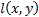 is the luminance comparison function;
where; , 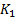 is a small constant 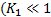) and is a dynamic range of pixel values.
- 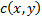 is the contrast comparison function;
where; 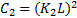, 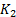 is a small constant (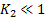) and is a dynamic range of pixel values.
- 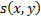 is the structure comparison function;
where 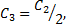 and , and , which are used for the relative importance of luminance, contrast and structural comparisons function, are 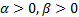 and 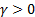.
If 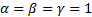 then equation 1 becomes;
where 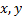 are images, is the mean intensity (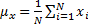), is the standard deviation as an estimate of signal contrast (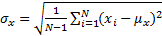) and is relative standard deviation (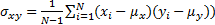.
Feature Similarity Index (FSIM) depends on PC and image GM parameters [20]. The images are firstly filtered by 2D Gabor filter is:
where 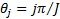 and is the number of orientation and is filter’s angular bandwidth. FSIM is calculated as follows.
where is whole image spatial domain, which is the weight of similarity .
where 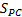 is phase congruency (PC) function 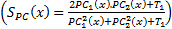 and is image gradient magnitude (GM) function 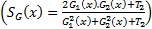, where 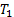 and 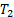 are positive constants for stability and Gradient Magnitude of an image is calculated by using Sobel, Prewitt and Scharr gradient operators’ partial derivatives 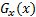 and of the image 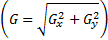. PC is:
where 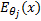 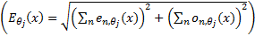 is the local energy along the orientation , and (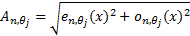, where are response of point on scale ) is the local amplitude on scale and orientation .
2.3. Procedure of Butterfly Identification Process
For the purpose of butterfly identification, the procedure of butterfly identification process is shown in Figure 2.
As seen in Figure 2, first of all, a prototype for each species was determined. These prototypes are determined by selecting the images which belonged higher similarity indexes between this image and other images. After determining the best “prototype” for each species, SSIM and FSIM indexes were calculated for each image with prototype images. A feature vector for each image with 19x1 sized, whose values are between 0 and 1, is determined. Finally, the machine learning methods were used to identify images. The machine learning methods used in this study were linear (built on the kl expansion of the common covariance matrix), linear (using pc expansion on the joint data), logistic linear, fisher least square linear, nearest mean, nearest mean scaled, linear perceptron, subspace, linear bayes, k-nearest neighbor, parzen, parzen density based, naive bayes, support vector, support vector classifier (nu algorithm) and arbitrary kernel/dissimilarity based classifier methods.
3. Results and Discussion
The classification accuracies were computed by the mean of 10 folds cross-validation. All the work on the computer was carried out using an Intel Core i7-2600 CPU, 3.4 GHz, 4 GB RAM, PC. An image and the obtained SSIM (α=β=γ=1) and FSIM (α=β=1) similarity indexes of this image with prototype images are shown in Figure 3 and Figure 4, respectively.
Note that the sample image belongs to Anthocharis cardamines species, which has the highest SSIM and FSIM indexes with the first image as seen in Figure 3 and 4. Once the dataset was generated, the classification was done with various classification methods that have different characteristic. The butterfly classification accuracies (%) and their standard deviation (STD) is sorted in Table 1. Employed SSIM parameters are α=β=γ=1 and FSIM are α=β=1.
The classification accuracies in Table 1 showed that the butterfly species can be determined without any error while employing features that are extracted by SSIM and FSIM similarity indexes. Additionally, for optimizing the decision support system, various α, β and γ values were assigned and the obtained classification accuracies were sorted in Table 2 and Table 3. k-Nearest Neighbor (kNN) was used for classification and performance and k is the optimized number of nearest neighbor.
| 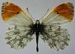 | 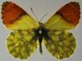 | 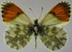 | 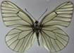 | 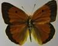 |
| SSIM:1.00 FSIM:1.00 |
SSIM:0.40 FSIM:0.74 |
SSIM:0.44 FSIM:0.76 |
SSIM:0.26 FSIM:0.72 |
SSIM:0.17 FSIM:0.65 |
| 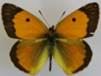 | 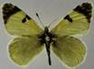 | 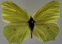 | 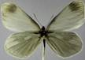 | 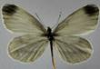 |
| SSIM:0.31 FSIM:0.71 |
SSIM:0.29 FSIM:0.71 |
SSIM:0.28 FSIM:0.68 |
SSIM:0.27 FSIM:0.68 |
SSIM:0.33 FSIM:0.72 |
| 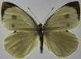 | ||||
| SSIM:0.28 FSIM:0.69 |
SSIM:0.31 FSIM:0.71 |
SSIM:0.32 FSIM:0.71 |
SSIM:0.23 FSIM:0.70 |
SSIM:0.23 FSIM:0.70 |
| SSIM:0.66 FSIM:0.23 |
SSIM:0.67 FSIM:0.20 |
SSIM:0.72 FSIM:0.30 |
SSIM:0.74 FSIM:0.36 |
Table 1. Results of Classification.
| Classification Methods | Feature Extraction Method | ||||
| SSIM | FSIM | ||||
| Accuracy(%) | STD | Accuracy (%) | STD | ||
| 1 | Linear classifier built on the KL expansion of the common covariance matrix | 98,95 | 0,64 | 99,26 | 0,47 |
| 2 | Linear classifier using PC expansion on the joint data | 98,4 | 0,98 | 99,1 | 0,47 |
| 3 | Logistic Linear Classifier | 100,00 | 0,00 | 100,00 | 0,00 |
| 4 | Fisher Least Square Linear Classifier | 99,89 | 0,24 | 99,37 | 0,24 |
| 5 | Nearest Mean Classifier | 96,42 | 1,84 | 98,32 | 0,58 |
| 6 | Nearest Mean Scaled Classifier | 95,47 | 1,09 | 97,89 | 0,64 |
| 7 | Linear Perceptron Classifier | 97,05 | 0,80 | 96,11 | 0,29 |
| 8 | Subspace Classifier | 97,05 | 0,47 | 98,21 | 0,29 |
| 9 | Linear Bayes Classifier | 98,42 | 0,83 | 99,47 | 0,00 |
| 10 | k-Nearest Neighbor Classifier | 99,16 | 0,29 | 98,84 | 0,44 |
| 11 | Parzen Classifier | 98,84 | 0,24 | 98,84 | 0,24 |
| 12 | Parzen Density Based Classifier | 97,79 | 0,69 | 97,05 | 0,88 |
| 13 | Naive Bayes Classifier | 92,11 | 0,64 | 95,05 | 0,80 |
| 14 | Support Vector Classifier | 98,42 | 0,64 | 97,26 | 0,44 |
| 15 | Support Vector Classifier (NU Algorithm) | 99,58 | 0,24 | 99,89 | 0,24 |
| 16 | Arbitrary Kernel/Dissimilarity Based Classifier | 99,58 | 0,44 | 99,47 | 0,00 |
Table 2. SSIM Parameter Estimation.
| Parameter | Value | Accuracy (%) | k | Parameter | Value | Accuracy (%) | K | |
| 1 1 1 |
99,16 | 1 | 1 1 0 |
100 | 1 | |||
| 1 0 0 |
100 | 1 | 0 1 1 |
99,47 | 1 | |||
| 0 1 0 |
100 | 1 | 1 0 1 |
99,47 | 1 | |||
| 0 0 1 |
98,05 | 1 | 2 2 1 |
99,47 | 1 |
Table 3. FSIM Parameter Estimation.
| Parameter | Value | Accuracy (%) | k |
| 1 1 |
98,84 | 3 | |
| 1 0 |
100 | 2 | |
| 0 1 |
99,47 | 3 |
Theoretically in SSIM, , and is defined as and , but as a mathematical view, setting one of the , and parameter to 0 means the impact of corresponding comparison function of that parameter will be 0, so the SSIM will be a combination of other comparison functions. α, β and γ parameters were used for assigning the impact of luminance, contrast and structural comparisons functions. It is clear in Table 2 that, the luminance or contrast comparison or both of them was enough for butterfly species identification while using the structural comparison function decreases the accuracy. In FSIM, and parameters of FSIM were used to adjust the relative importance of PC and GM features. The results in Table 3 show that the PC was a more important classification feature than GM parameter for butterfly classification. Additionally different gradient operators such as Scharr, Prewitt and Sobelis were employed and it was observed that it did not change the accuracy. To date FSIM has been used for image quality analysis and it is not used for classification.
To assess the accuracy of employing SSIM [14, 15] and FSIM [20] operators, the same dataset was compared with peak-signal-to-noise ratio (PSNR) [19], scale invariant feature transform (SIFT) [21], histogram comparison (HISTC) [22] and image spatiogram comparison (SPATC) [23] and the obtained accuracies are listed in Table 4. In this comparison, to minimize the effect of machine learning method, the classifications were carried out by logistic linear classifier (LLC), linear bayes classifier (LBC), k-nearest neighbor (kNN), nu-support vector classifier (NUSVM) and arbitrary kernel/dissimilarity based classifier (AKBC) methods.
Table 4 shows that SSIM and FSIM are better than the other employed similarity methods for butterfly classification. The accuracies obtained with the same dataset in previous studies were sorted in Table 5.
Table 4. Comparison of Similarity Methods.
| Method | Parameter | LLC | LBC | kNN | NUSVM | AKBC |
| SSIM | Accuracy (%) STD |
100 0 |
98,32 0,69 |
99,37 0,24 |
99,58 0,24 |
99,58 0,44 |
| FSIM | Accuracy (%) STD |
100 0 |
99,26 0,29 |
98,95 0,37 |
99,79 0,29 |
99,47 0 |
| SIFT | Accuracy (%) STD |
75,05 1,37 |
73,16 1,18 |
82,74 1,26 |
75,79 1,53 |
81,58 1,62 |
| HISTC | Accuracy (%) STD |
92,42 1,56 |
95,37 0,69 |
94,63 0,69 |
89,05 2,51 |
93,68 1,39 |
| SPATC | Accuracy (%) STD |
97,05 0,71 |
96,84 1,23 |
95,79 0,74 |
95,16 0,78 |
94,53 0,71 |
| PSNR | Accuracy (%) STD |
35,79 0,91 |
85,37 2,12 |
92,74 0,69 |
87,58 1,42 |
92,74 1,14 |
Table 5. Obtained Accuracies.
| Reference | Feature Extraction | Machine Learning | Accuracy (%) |
| in [3] | Gabor Filters | ELM | 97 |
| in [4] | GLCM | MLR | 96,3 |
| in [5] | GLCM | ANN | 92.85 |
| in [6] | LBP | ELM | 98.25 |
| in [6] | GLCM | ELM | 96.45 |
| in this study | SSIM | LLC | 100 |
| in this study | FSIM | LLC | 100 |
It is apparent from Table 5 that the obtained classification accuracy is higher while employing similarity indexes instead of texture methods. The proposed approach has a number of attractive features: it needs lower computational complexity and time requirements compare with texture methods. A possible explanation for the higher classification accuracy obtained while employing SSIM and FSIM this might be that their computational simplicity and power of distinguishing image.
The authors strongly suggest that employing similarity by prototypes is a better approach than using conventional diagnostic methods for identification and other image texture analysis methods. Since employing it requires less effort and attention than time consuming and attention-seeking conventional diagnostic methods [6]. Furthermore, employing prototypes is a natural human learning mechanism; therefore the proposed method can be easily enlarged to include other species or families.
3. Conclusion
The present study was designed to determine the effect of employing the similarity indexes SSIM and FSIM to identify the butterfly species instead of texture methods, which are complex and time consuming methods. The proposed method is depends of human learning (prototypes) and vision system (SSIM and FSIM), therefore it is a natural way of classification of butterfly species. The classification accuracies of using them are higher than the results obtained in the literature. Also, these results were compared with results obtained from employing PSNR, SIFT, HISTC and SPATC similarity methods. Additionally, the accuracy results were showing that the butterfly identification is depended on the luminance or contrast comparison while using the structural comparison function decreases the accuracy in SSIM. Similarly, in FSIM, the PC was more important than GM parameter and gradient operators did not change the accuracy. To our knowledge, there isn’t any study in the literature to identify the butterfly species by using similarity methods. The results of this study show/indicate that SSIM and FSIM similarity operators were very successful feature extraction methods for butterfly identification and the obtained classification accuracy is 100%, when the classification was carried out with logistic linear classifier. The most obvious finding to emerge from this study is that the proposed method can be used with enlarged datasets by adding a prototype image for each new butterfly species and can be used in real time application depend on its simplicity.
References
[1] L. Kayci, “Erek Dağı (Van) Papilionoidea ve Hesperioidea Ekolojisi ve Faunası Üzerine Araştırmalar (Lepidoptera),” Priamus Suppl., vol. 6, pp. 1-47, 2007.
[2] P. Herbert and R. Gregory, “The Promise of DNA Barcoding for Taxonomy,” Syst. Biology, vol. 54, no. 5, pp. 852-859, Jul. 2005. View Article
[3] L. Kayci, Y. Kaya and T. Ramazan, “A Computer Vision System for the Automatic Identification of Butterfly Species via Gabor-Filter-Based Texture Features and Extreme Learning Machine: GF+ELM,” TEM J., vol. 2, no. 1, pp.13-20, Nov. 2013. View Article
[4] L. Kayci and Y. Kaya, “A Vision System for Automatic Identification of Butterfly Species Using a Grey-Level Co-occurrence Matrix and Multinomial Logistic Regression,” Zoology in the Middle East, vol. 60, no. 1, pp. 57-64, Feb. 2014. View Article
[5] Y. Kaya and L. Kayci, “Application of Artificial Neural Network for Automatic Detection of Butterfly Species Using Color and Texture Features,” Visual Comput., vol. 30, no. 1, pp. 71-79, Jan. 2014. View Article
[6] Y. Kaya, L. Kaycı, R. Tekin, and Ö.F. Ertuğrul, “Evaluation of Texture Features for Automatic Detecting Butterfly Species Using Extreme Learning Machine,” J. of Experimental & Theoretical Artificial Intell., vol. 26, no. 2, pp. 267-281, Jan. 2014. View Article
[7] F.G. Ashby and WT Maddox, “Relation Between Prototype, Exemplar and Decision Bound Models of Categorization,” J. of Math. Psychology, vol. 37, no. 3, pp.372-400, Sep. 1993. View Article
[8] W.T. Maddox and F.G. Ashby, “Comparing Decision Bound and Exemplar Models of Categorization,” Perception & Psychophysics, vol. 53, no. 1, pp. 49-70, Jan. 1993. View Article
[9] F. Leon, “Generalized Nearest Neighbor Method for the Classification of Composite Concepts,” IEEE 2nd Int. Conf. on Intell. Comput. Commun. and Process., ICCP, pp. 23-28, (2006). View Article
[10] D.L. Medin, B.H. Ross, and A.B. Markman, “Cognitive Psychology,” Wiley, 2005. View Book
[11] D.N. Osherson and E. Smith, “On the Adequacy of Prototype Theory as a Theory of Concepts,” Cognition, vol. 9, no. 1, pp. 35-58, 1981. View Article
[12] E. Smith and D.N. Osherson, “Conceptual Combination with Prototype Concepts,” Cognitive Sci., vol. 8, no. 4, pp. 337-361, Oct. 1984. View Article
[13] S. Garcia, J. Derrac, J. Luengo, and F. Herrera, “A First Approach to Nearest Hyperrectangle Selection by Evolutionary Algorithms,” Ninth Int. Conf. on Intell. Syst. Design and Appl., pp. 517-522, 2009. View Article
[14] Z. Wang, E. P. Simoncelli, and A. C. Bovik, “Multiscale Structural Similarity for Image Quality Assessment,” Signals, Syst. and Comput., 2004. Conf. Record of the Thirty-Seventh Asilomar Conf, vol. 2, pp. 1398-1402, Nov. 2003. View Article
[15] Z. Wang, A. C. Bovik, H. R. Sheikh, and E. P. Simoncelli, “Image Quality Assessment: From Error Visibility to Structural Similarity,” IEEE Trans. on Image Process., vol. 13, no. 4, pp. 600-612, Apr. 2004. View Article
[16] Z. Wang, Q. Li, and X. Shang, “Perceptual Image Coding Based on A Maximum of Minimal Structural,” Int. Conf. on Image Process., ICIP 2007: pp. II-121– II-124, 2007. View Article
[17] D. M. Rouse and S. S. Hemami, “Analyzing the Role of Visual Structure in the Recognition of Natural Image Content with Multi-Scale SSIM Similarity Criterion,” IEEE Western New York Image Process. Workshop, WNYIP, 2007. View Article
[18] G. Fan, Z. Wang, and J. Wanga, “CW-SSIM Kernel Based Random Forest for Image Classification,” Visual Commun. and Image Process., vol. 7744, Aug. 2010. View Article
[19] A. Horé and D. Ziou, “Image Quality Metrics: PSNR vs. SSIM,” IEEE 2010, Int. Conf. on Pattern Recognition, 2010. View Article
[20] L. Zhang, L. Zhang, X. Mou, and D. Zhang, “FSIM: A Feature Similarity Index for Image Quality Assessment,” IEEE Trans. on Image Process., vol. 20, no, 18, pp. 2378 – 2386, Jan. 2011. View Article
[21] D. G. Lowe, “Distinctive Image Features from Scale-Invariant Keypoints,” Int. J. of Comput. Vision, Nov. 2004. View Article
[22] V.D. Weken, M. Nachtegael, and E. Kerre, “Some New Similarity Measures for Histograms,” Fourth Indian Conf. on Comput. Vision, Graphics & Image Process., 2004. View Article
[23] C. O. Conaire, N. E. O’Connor, and A. F. Smeaton, “An Improved Spatiogram Similarity Measure For Robust Object Localisation,” Acoustics, Speech and Signal Process., ICASSP 2007. View Article